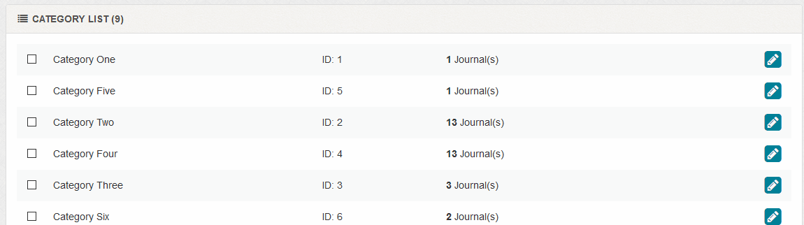
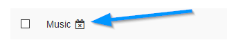

1 To delete, use checkboxes and the delete button. You can select all via the
icon.
2 To edit, click the
icon.
3 To reorder, drag and drop rows.

Note that deleting a category will delete all journals in that category. If a journal is in multiple
categories and other categories still exist, the journal will NOT be deleted.
A
icon denotes a private category.
If a category is set to auto delete, a
icon is shown.

![]()